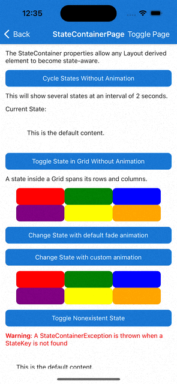

StateContainer
Displaying a specific view when your app is in a specific state is a common pattern throughout any mobile app. Examples range from creating loading views to overlay on the screen, or on a subsection of the screen. Empty state views can be created for when there's no data to display, and error state views can be displayed when an error occurs.
Getting Started
The StateContainer attached properties enables the user to turn any layout element like a VerticalStackLayout, HorizontalStackLayout, or Grid into a state-aware layout. Each state-aware layout contains a collection of View derived elements. These elements can be used as templates for different states defined by the user. Whenever the CurrentState string property is set to a value that matches the StateKey property of one of the View elements, its contents will be displayed instead of the main content. When CurrentState is set to null or empty string, the main content is displayed.
Note
When using StateContainer with a Grid, any defined states inside it will automatically span every row and column of the Grid.
Syntax
StateContainer properties can be used in XAML or C#.
XAML
Including the XAML namespace
In order to use the toolkit in XAML the following xmlns needs to be added into your page or view:
xmlns:toolkit="http://schemas.microsoft.com/dotnet/2022/maui/toolkit"
Therefore the following:
<ContentPage
x:Class="CommunityToolkit.Maui.Sample.Pages.MyPage"
xmlns="http://schemas.microsoft.com/dotnet/2021/maui"
xmlns:x="http://schemas.microsoft.com/winfx/2009/xaml">
</ContentPage>
Would be modified to include the xmlns as follows:
<ContentPage
x:Class="CommunityToolkit.Maui.Sample.Pages.MyPage"
xmlns="http://schemas.microsoft.com/dotnet/2021/maui"
xmlns:x="http://schemas.microsoft.com/winfx/2009/xaml"
xmlns:toolkit="http://schemas.microsoft.com/dotnet/2022/maui/toolkit">
</ContentPage>
Using the StateContainer
Below is an example UI created using XAML. This sample UI is connected to the below ViewModel, StateContainerViewModel.
<ContentPage xmlns="http://schemas.microsoft.com/dotnet/2021/maui"
xmlns:x="http://schemas.microsoft.com/winfx/2009/xaml"
xmlns:toolkit="http://schemas.microsoft.com/dotnet/2022/maui/toolkit"
x:Class="MyProject.MyStatePage"
BindingContext="StateContainerViewModel">
<VerticalStackLayout
toolkit:StateContainer.CurrentState="{Binding CurrentState}"
toolkit:StateContainer.CanStateChange="{Binding CanStateChange}">
<toolkit:StateContainer.StateViews>
<VerticalStackLayout toolkit:StateView.StateKey="Loading">
<ActivityIndicator IsRunning="True" />
<Label Text="Loading Content..." />
</VerticalStackLayout>
<Label toolkit:StateView.StateKey="Success" Text="Success!" />
</toolkit:StateContainer.StateViews>
<Label Text="Default Content" />
<Button Text="Change State" Command="{Binding ChangeStateCommand}" />
</VerticalStackLayout>
</ContentPage>
C# Markup
Below is the same UI as the XAML, above, created using C# Markup.
This sample UI is connected to the below ViewModel, StateContainerViewModel.
using CommunityToolkit.Maui.Layouts;
using CommunityToolkit.Maui.Markup;
BindingContext = new StateContainerViewModel();
Content = new VerticalStackLayout()
{
new Label()
.Text("Default Content"),
new Button()
.Text("Change State")
.Bind(
Button.CommandProperty,
static (StateContainerViewModel vm) => vm.ChangeStateCommand,
mode: BindingMode.OneTime)
}.Bind(
StateContainer.CurrentStateProperty,
static (StateContainerViewModel vm) => vm.CurrentState,
static (StateContainerViewModel vm, string currentState) => vm.CurrentState = currentState)
.Bind(
StateContainer.CanStateChangeProperty,
static (StateContainerViewModel vm) => vm.CanStateChange,
static (StateContainerViewModel vm, bool canStateChange) => vm.CanStateChange = canStateChange)
.Assign(out VerticalStackLayout layout);
var stateViews = new List<View>()
{
//States.Loading
new VerticalStackLayout()
{
new ActivityIndicator() { IsRunning = true },
new Label().Text("Loading Content")
},
//States.Success
new Label().Text("Success!")
};
StateView.SetStateKey(stateViews[0], States.Loading);
StateView.SetStateKey(stateViews[1], States.Success);
StateContainer.SetStateViews(layout, stateViews);
static class States
{
public const string Loading = nameof(Loading);
public const string Success = nameof(Success);
}
ViewModel
When using an ICommand to change CurrentState (e.g. when using Button.Command to change states),
we recommended using CanStateBeChanged for ICommand.CanExecute().
Below is an MVVM example using the MVVM Community Toolkit:
[INotifyPropertyChanged]
public partial class StateContainerViewModel
{
[ObservableProperty]
[NotifyCanExecuteChangedFor(nameof(ChangeStateCommand))]
bool canStateChange;
[ObservableProperty]
string currentState = States.Loading;
[RelayCommand(CanExecute = nameof(CanStateChange))]
void ChangeState()
{
CurrentState = States.Success;
}
}
By default StateContainer changes state without animation. To add a custom animation you can use the ChangeStateWithAnimation method:
async Task ChangeStateWithCustomAnimation()
{
var targetState = "TargetState";
var currentState = StateContainer.GetCurrentState(MyBindableObject);
if (currentState == targetState)
{
await StateContainer.ChangeStateWithAnimation(
MyBindableObject,
null,
(element, token) => element.ScaleTo(0, 100, Easing.SpringIn).WaitAsync(token),
(element, token) => element.ScaleTo(1, 250, Easing.SpringOut).WaitAsync(token),
CancellationToken.None);
}
else
{
await StateContainer.ChangeStateWithAnimation(
MyBindableObject,
targetState,
(element, token) => element.ScaleTo(0, 100, Easing.SpringIn).WaitAsync(token),
(element, token) => element.ScaleTo(1, 250, Easing.SpringOut).WaitAsync(token),
CancellationToken.None);
}
}
This is how it works on iOS:

Properties
StateContainer
The StateContainer properties can be used on any Layout inheriting element.
| Property | Type | Description |
|---|---|---|
| StateViews | IList<View> |
The available View elements to be used as state templates. |
| CurrentState | string |
Determines which View element with the corresponding StateKey should be displayed. Warning: CurrentState cannot be changed while a state change is in progress |
| CanStateChange | bool |
When true, the CurrentState property can be changed. When false, cannot be changed because it is currently changing. Warning: If CurrentState is changed when CanStateChanged is false, a StateContainerException is thrown. |
StateView
The StateView properties can be used on any View inheriting element.
| Property | Type | Description |
|---|---|---|
| StateKey | string |
Name of the state. |
Methods
StateContainer
| Method | Arguments | Description |
|---|---|---|
| ChangeStateWithAnimation (static) | BindableObject bindable, string? state, Animation? beforeStateChange, Animation? afterStateChange, CancellationToken token | Change state with custom animation. |
| ChangeStateWithAnimation (static) | BindableObject bindable, string? state, Func<VisualElement, CancellationToken, Task>? beforeStateChange, Func<VisualElement, CancellationToken, Task>? afterStateChange, CancellationToken cancellationToken | Change state with custom animation. |
| ChangeStateWithAnimation (static) | BindableObject bindable, string? state, CancellationToken token | Change state using the default fade animation. |
Examples
You can find an example of this feature in action in the .NET MAUI Community Toolkit Sample Application.
API
You can find the source code for StateContainer over on the .NET MAUI Community Toolkit GitHub repository.